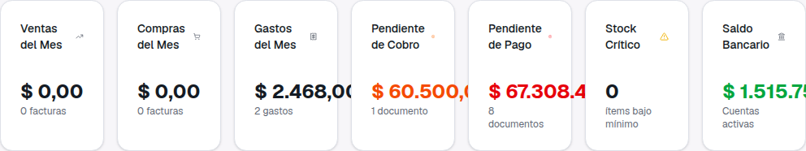
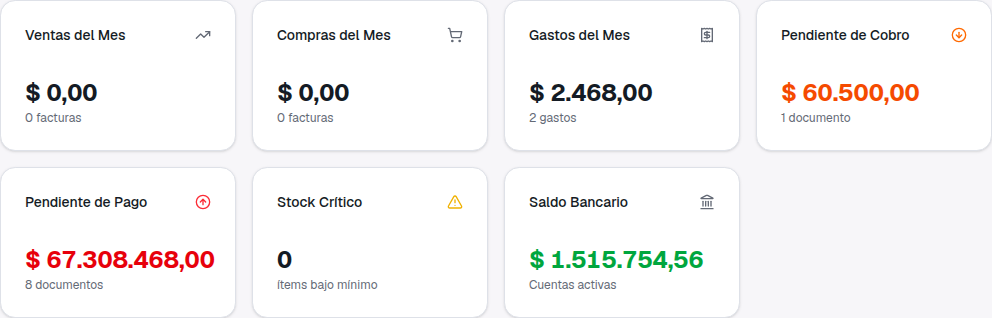
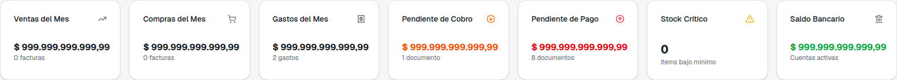
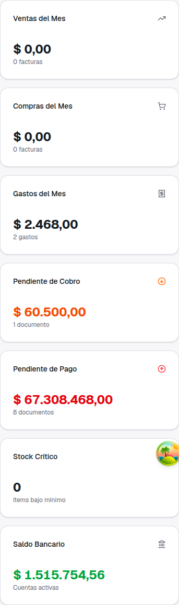

Guía de presentación — qué pasaba, qué cambió, cómo se ve en cada pantalla y qué no cambia
En la fila de indicadores del Dashboard (Ventas, Compras, Gastos, Pendiente de Cobro, Pendiente de Pago, Stock Crítico y Saldo Bancario) los montos con muchas cifras quedaban cortados: el número pasaba por encima del borde de la tarjeta y no se podía leer completo.
Pasaba en las pantallas de notebook y de escritorio comunes (1280 y 1440 px de ancho), que es donde las siete tarjetas se apretaban en una sola fila.
Las siete tarjetas siempre en una fila: en una notebook cada una quedaba muy angosta, los títulos ocupaban dos líneas y montos como $ 67.308.468,00 se cortaban.

Las tarjetas se acomodan solas según el espacio que haya: si no entran todas en una fila, pasan a la siguiente. Cada tarjeta tiene el ancho suficiente para que el título entre en una línea y el monto se lea completo.

Para asegurarnos de que no vuelva a pasar, probamos con el monto más largo razonable ($ 999.999.999.999,99, casi un billón) en todas las tarjetas a la vez. Cuando un monto no entra al tamaño normal, los números de la fila se muestran con una letra un poco más chica, todos del mismo tamaño para que se puedan comparar de un vistazo.

Además, al pasar el mouse sobre cualquier monto aparece su valor completo.

En el celular las tarjetas ya se mostraban una debajo de la otra, y así siguen. Se ven igual que antes, con los títulos en una línea.